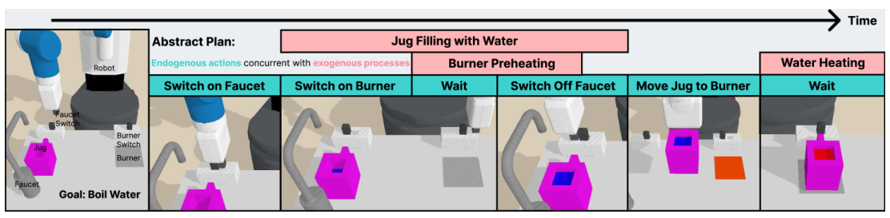
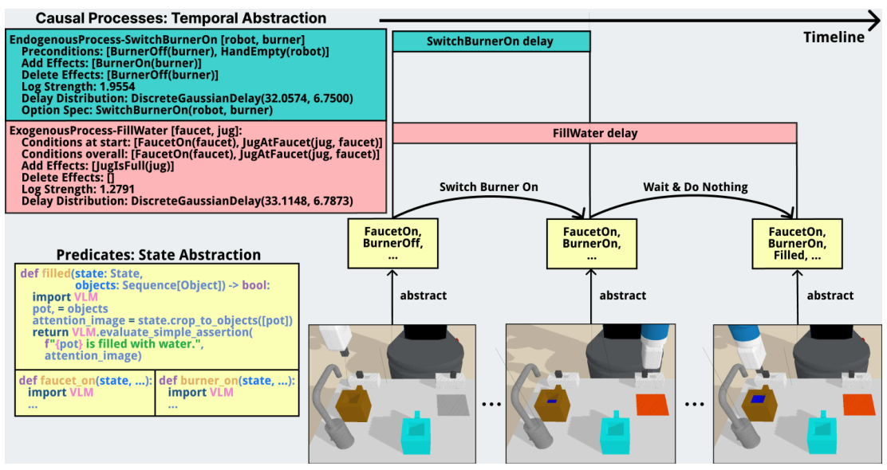
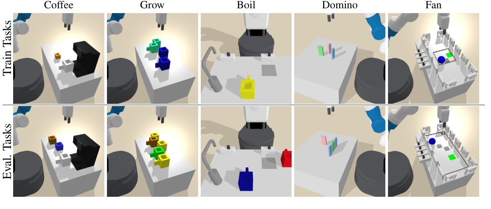
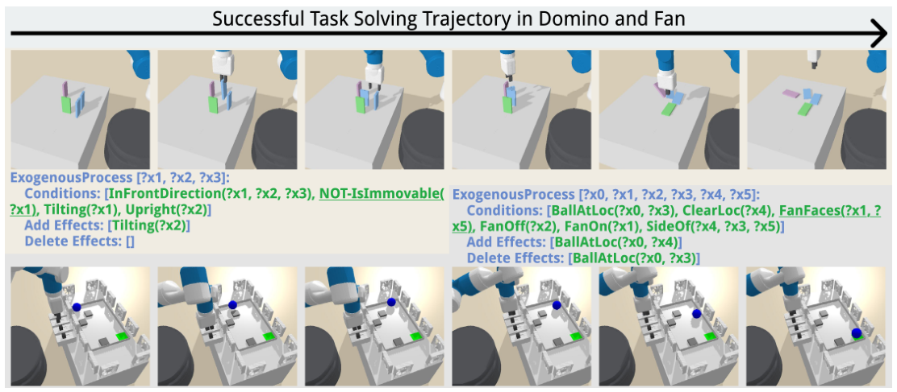
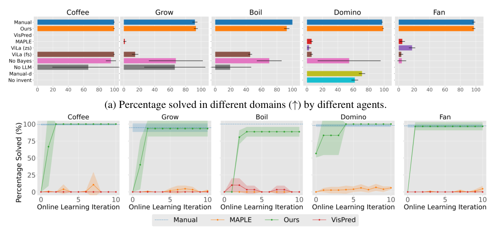

因果过程
外生机制（Exogenous）
抽象世界模型
变分贝叶斯推断
arXiv 2509.26255 · 在审
ExoPredicator：学习动态世界的抽象模型，用于机器人规划
ExoPredicator: Learning Abstract Models of Dynamic Worlds for Robot Planning
Yichao Liang, Dat Nguyen, Cambridge Yang, Tianyang Li, Joshua B. Tenenbaum, Carl Edward Rasmussen, Adrian Weller, Zenna Tavares, Tom Silver, Kevin Ellis · Cambridge / Basis / Cornell / Princeton / MIT / Oxford
一句话总结： 世界不只会因智能体的动作而改变——外生过程 （烧水、多米诺骨牌级联、风扇吹球）会在智能体动作的同时自己演化。本文提出一个抽象世界模型框架，联合学习符号状态表示 + 因果过程 （既含智能体自己的动作，也含外部机制），每个因果过程建模一个带随机延迟 的随机因果效应关系。用变分贝叶斯推断 + LLM 提议 从少量数据学习，在 5 个仿真桌面机器人环境上实现快速规划并泛化到更多物体、更复杂目标的留出任务。
① 摘要解读
② 背景与动机
③ 因果过程表示
④ 学习与推断
⑤ 实验设置
⑥ 结果与分析
⑦ Insights
⑧ 链接
01 摘要解读长时程具身规划之所以难，是因为世界不只是通过智能体的动作改变 ：外生过程（水加热、多米诺级联）与智能体的动作并发展开 。本文提出一个抽象世界模型框架，联合学习：
符号状态表示 （谓词，Python 函数查询 VLM）；因果过程 ，覆盖内生动作（endogenous） 与外生机制（exogenous）。
每个因果过程建模一个随机因果效应关系的时间进程 （带随机延迟与权重）。从有限数据经变分贝叶斯推断 + LLM 提议 学习。在 5 个仿真桌面机器人环境上，学到的模型实现快速规划、泛化到更多物体与更复杂目标的留出任务，超越一系列基线。
⟨C,O,E,W,pdelay ⟩
因果过程 schema：条件+效应+权重+随机延迟
5 域
Coffee / Grow / Boil / Domino / Fan
9 方法
对比 HRL / VLM / STRIPS / 消融
02 研究背景与动机（Introduction）外生过程：被忽视的"另一半故事"
要思考行为的未来后果，智能体是否需要逐像素、逐帧仿真世界？抽象世界模型主张保留决策所需信息、隐藏无关细节。但近期学习抽象世界模型的工作假设世界只通过直接的、瞬时动作改变 。现实中动作并非瞬时，且只是"一半的故事"：外部世界有自己的因果机制，与我们的动作并发连续演化 。例如烧水：打开水壶后，水温持续上升、最终沸腾——与智能体后续动作无关 。
关键区分：抽象"时间的粒度"≠抽象"自己的动作"
好的抽象世界模型不仅要抽象状态，还要抽象
时间粒度 ：决策者应知道"打开水壶会触发另一机制、最终导致沸腾"，而无需推理水温的精确时间进程（机器人可以边等水开边切菜）。这与 options/skills/高层动作
概念上分离 ——后者抽象的是
自己动作 的时间进程，而非外部世界因果过程的时间进程。
PDDL 的局限
沿用数十年的标准规划表示 PDDL 也做不到：它只建模自己动作的效应，且把每个动作视为瞬时 。学习符号 PDDL 规划模型会随时间粒度 组合爆炸；VLM/VLA 原则上能推理外部机制，但对新颖情形（尤其时序物理约束）泛化差。

图 1：动态环境同时包含内生过程（智能体直接控制的动作，如打开水龙头）与外生过程（自行演化的机制，如水壶注水）。规划需同时推理两类过程。
四大贡献
一种符号且可学习 的抽象世界模型表示，适用于带时序动态与外部因果过程的环境；
一个利用基础模型常识 的状态抽象学习器；
一个高效贝叶斯推断方法 ，学习因果模型的参数与结构；
一个快速规划器 ，用该表示做推理。
03 抽象状态、时间与因果过程

图 2：原始输入经谓词映射到状态抽象（检测二元特征的短 Python 程序）；抽象状态的时序动态由因果过程支配——内生过程（动作）或外生过程（外部世界）。原因经延迟后才实现效应、且可交错。学习因果过程使规划能把逐帧动态分解为抽象状态间的离散跳跃。
3.1 用谓词做状态抽象
谓词 ψ 是状态的布尔特征，表示为查询 VLM 检查机器人视觉输入的 Python 函数 。谓词集 Ψ 诱导抽象状态 s = 所有成立的"谓词-物体"组合（ground atoms）。
3.2 因果过程：非形式直觉
因果过程粗略建模一个"原因-效应"关系。如打开桶上方的水龙头，触发一串因果效应：塞子打开→隐藏管道注水→桶内水位上升→最终桶满。对决策而言，许多细节无关，因果过程用"某些条件（原因）稍后导致另一些条件（效应）"来抽象掉它们。
3.3 因果过程：形式化 schema
每个因果过程 L 由元组定义：
L = ⟨PAR, C, O, E, W, pdelay ⟩
PAR ：类型化变量表（参数）；C（condition at start） ：过程激活必须为真的原子集；O（condition overall） ：过程全程必须保持为真的原子集；E（effect） ：完成时的状态变化（add 集 + delete 集）；W（weight） ：条件满足时效应发生的可能性；pdelay ：激活到效应之间延迟的概率分布。
内生过程额外包含一个技能 c∈C。示例：内生过程 SwitchBurnerOn（参数 ?robot、?burner），条件 C 要求炉子关着、机器手空闲，执行后效应 E（炉子开）经 p_delay 采样的延迟发生。
3.4 概率语义
因果过程定义抽象状态如何随时间演化的概率生成模型。每个 ground 过程 L 对抽象状态各特征施加一个势能（effect potential）Ej L ，配合框架公理势能 F（鼓励状态随时间保持不变，W_F 可学习）。因为因果过程有随机延迟，每个 ground 过程关联随机变量 ΔL t （若在时刻 t 触发，则延迟采样自 p_delay）。状态与延迟的联合分布为逐时刻条件分布的乘积。
04 学习与推断：变分贝叶斯 + LLM 提议4.1 学习什么
状态抽象 ：合成检测二元特征的谓词程序（沿用 VisualPredicator 的谓词学习方法论，但为外生动态扩展）；因果过程的结构与参数 ：每个过程的 schema（条件/效应/权重/延迟分布）。
4.2 变分贝叶斯推断
学习因果过程参数与结构时，用变分贝叶斯推断 从少量轨迹数据估计后验。关键是：
搜索空间随候选条件组合爆炸（有时达 250 量级），穷举不可行；
因此用 LLM 提议候选条件 （利用基础模型的常识缩小搜索），再用贝叶斯后验评分 选出最优结构。
为什么"贝叶斯 + LLM"缺一不可
只有 LLM 提议、没有贝叶斯选择 → 完全依赖 LLM 先验，遇到罕见/未见的环境动态就不可靠（No Bayes 消融失败）；只有贝叶斯、没有 LLM 引导 → 搜索空间巨大到无法评分所有候选条件（No LLM 消融失败）。两者结合：
LLM 负责缩小结构搜索空间，贝叶斯后验负责用数据做可靠选择 。
4.3 快速规划器
学到抽象世界模型后，规划器把逐帧动态分解为抽象状态间的离散跳跃，用事件队列模拟因果过程的延迟与交错，做前瞻规划。
05 实验设置实验平台（5 个 PyBullet 桌面环境）
环境 任务与外生过程 技能 Coffee 填满杯子（煮咖啡、倒咖啡都是外生过程） Pick / Place / Push / Pour Grow 给花盆浇水（同色壶浇水才会长） Pick / Place / Pour Boil 烧水（水龙头开着、下方无壶或壶已满会溢出——外生过程） Pick / Place / Switch On/Off Domino 推倒指定多米诺（级联是外生过程，含"不可能任务"） Pick / Place / Push Fan 控制风扇把球吹到目标（风吹球是外生过程） Switch On/Off

图 4：环境。上排训练任务示例，下排评估任务示例。
评估协议与指标
3 个随机种子，每种子用 1–2 个训练任务（各含 1 条示范），在 50 个留出测试任务 （物体更多、目标更复杂）上评估；
每次在线学习迭代做 8 次 rollout，每次最多 300 步；
指标：solve rate（解决率） 。
对比方法（9 种）
方法 说明 Manual 手工设计谓词 + 过程的规划智能体（上界参考） Ours（ExoPredicator） 本文方法 MAPLE HRL：学动作价值函数选控制器，不显式学世界模型/前瞻（1000 训练任务、10000 次交互） ViLa（zs / fs） VLM 规划：prompt Gemini-2.5-Pro 规划技能序列（零样本/少样本） VisPred（VisualPredicator） 在线 STRIPS 式操作学习 + 规划（对比因果过程 vs 传统 STRIPS 表示） No Bayes 消融：只用 LLM 学过程、无贝叶斯模型选择 No LLM 消融：用快速启发式替代 LLM 条件提议（谓词提议仍用 LLM） Manual-d 消融：Manual 抽象但所有过程统一延迟参数（如 1） No invent 消融：只用初始抽象、不做任何学习
06 实验结果与分析

图 5：ExoPredicator 在 Domino（上）与 Fan（下）环境的成功轨迹。代码高亮学到的关键外生过程——多米诺如何级联、风扇的风如何推动球。这些过程融入了智能体发明的谓词（如 NOT-IsImmovable、FanFaces）。

图 6：(a) 各智能体在不同域的解决率（↑）；(b) 在线学习智能体的学习曲线。
6.1 Q1：全面超越 HRL / VLM / STRIPS 基线
本方法在各域一致超越 ViLa、MAPLE、VisPred，达到接近满分；
每个环境学到 1–4 个外生过程 ，最多 3 次在线交互迭代 即收敛；
MAPLE 即便 1000 倍交互量、只在训练分布内评估也难达高水平（稀疏奖励探索难题）；
ViLa 零样本在所有域都差；少样本只在简单域尚可（满足计划与示范相似时，如 Coffee 只需多做几次 Pour 和 NoOp），一旦需试错发现规则（Grow 的颜色匹配）或组合泛化就显著退化；
VisPred 在高度受限的模型空间 里学习：它试图把外生过程学成 NoOp 技能的不同操作符，但过强的归纳偏置（先决条件只含效应/选项里已出现变量的原子）限制了它，尤其 NoOp 只有 "robot" 一个变量；且它不学不同过程的不同延迟 （对 Boil 的高效规划至关重要）。
6.2 Q2：达到或超过手工抽象
本方法在 Coffee 与 Fan 上与 Manual 持平，在 Grow 与 Domino 上更好——归功于变分推断学到的参数 （而非手工调参）。No invent 与 Manual-d 接近零性能，凸显模型学习与参数学习的重要性（如 Domino 里对动力学与延迟的不完全知识导致它们把多数任务误判为不可解）。
6.3 Q3：贝叶斯与 LLM 都不可或缺
贝叶斯模型学习与 LLM 引导对高效、有效、鲁棒的结构学习都至关重要。无 LLM 引导时，每个过程的搜索空间大到天文数字（有时 250 ），无法评分所有候选条件；不计算数据与模型的贝叶斯后验，选择就完全依赖 LLM 先验，遇到罕见或未见动态就不可靠。
6.4 一个诚实的失败案例
ExoPredicator 在 Boil 上无法解决全部任务，部分原因是没识别出溢出的完整条件 ：它学到了"水龙头下方无壶时溢水"的过程，但没学到"下方壶已满时也溢水"的过程。
07 核心 Insights
1. 抽象"时间粒度"与抽象"自己的动作"是两回事
options/skills 只抽象自己动作的时间进程；外生过程（烧水、级联、吹风）需要
另一类抽象 ——把"触发条件 → 延迟 → 效应"整个因果链压缩成一个带随机延迟的过程。这是 PDDL/STRIPS 无法表达、也是本工作的核心增量。
2. 随机延迟对高效规划至关重要
不同的外生过程有不同的延迟分布（烧水慢、多米诺快）。不学延迟（VisPred、Manual-d）就会规划出错——如 Boil 里需要精确判断"何时壶会满/会溢出"来安排动作。
3. "LLM 提议 + 贝叶斯选择"是处理组合爆炸的通用配方
结构搜索空间可达 2^50，纯枚举不可行；纯 LLM 又不可靠。LLM 用常识缩小候选、贝叶斯后验用数据做可靠评分——两者分工，各自补足对方短板。
4. 归纳偏置太强会"塞死"学习
VisPred 的 STRIPS 偏置（先决条件只能引用已出现变量）让它无法把外生过程编码进 NoOp——
表示能力不足时，学什么算法都白搭 。放宽表示（允许因果过程的独立 schema）是性能跃升的根因。
5. 端到端神经网络在稀疏奖励 + 长时程前仍显乏力
MAPLE 用 1000 倍交互仍难成功，凸显
显式世界模型 + 前瞻规划 在样本效率上的优势——学到 1–4 个正确因果过程，比从原始奖励里学整个动力学高效得多。